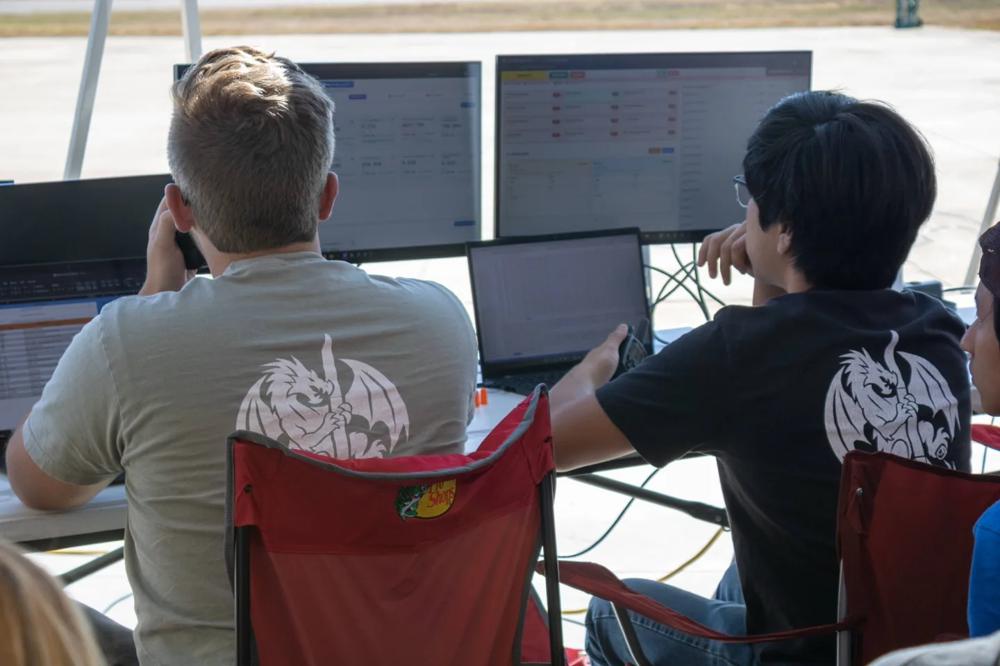

01 / GROUND CONTROLSOFTWARE + OPERATIONS
Make the system legible when the stakes rise.
I wrote ground-control software for ERPL waterflow and liquid-rocket static-fire tests. It brings pressure, temperature, load, valve state, and system health into one operating view while supporting remote actuation and automated sequences. I integrated the data-acquisition hardware and served as ground controller on more than eight tests.
THE LESSON An operator needs clear state, useful alarms, and a path to safe action.
See university test coverage